Color Theory 2
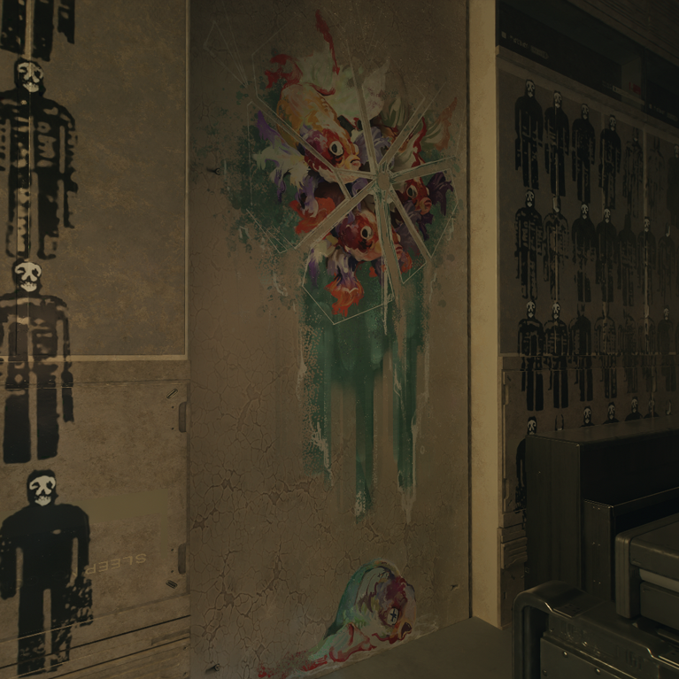
Introduction
This is a continuation of color theory 1. It is expected that you are coming into this research with a brief understanding of that paper. The goal of this follow up is to take what we know from color theory and apply the symbolism used in the game. We will be trying to extract some implementation details that could reveal more about the game's story.
The Color Wheel Tattoo
{kind=link}
There are many tattoos in the game that hold symbolism. We'll cover those in greater detail later. For now I want to focus on the one in this article's header - one that was brought to surface attention by the reddit user OniHanzpPT.
There are several key differences in this tattoo that do not exist in previous discussions:
- There is an input and an output (red/orange in, yellow out).
- There is what appears to be an interface tattoo underneath, indicating 7 IO pins.
- The wheel is missing colors, instead using the existing colors to spread beyond the normal confines of a color wheel.
- Green and cyan are swapped/reversed.
Let's break down these key differences.
RGB vs CMYK
{kind=link}
There are two primary color models that are used: RGB and CMYK. RGB is used for digital displays, while CMYK is used for printing.
RGB
Red, green, blue.
- Combine to get white.
- Absence of all colors is black.
- Used for digital displays.
- Additive color model.
- Light defines the color.
- 16.7 million colors.
CMYK
Cyan, magenta, yellow, key (black).
- Combine to get black.
- Absence of all colors is white.
- Used for printing.
- Subtractive color model.
- Pigment defines the color.
- 16 K colors.
Tattoo Missing Colors
What We See
There are 4 base colors on the wheel:
- red (rgb)
- yellow (cmyk)
- cyan (cmyk)
- green (rgb)
And 1 tertiary color:
- orange (red + yellow = corpo fish)
What We Don't See
By using our knowledge of RGB and CMYK, we can make an educated guess on what base colors are missing:
- magenta (cmyk)
- blue (rgb)
And tertiary:
- pale blue (tertiary / blue + cyan - corpo fish)
Johnny's side may actually contain more colors, but these are the ones we KNOW are missing.
Black and White
While research on this front still needs more work, there are a few promising angles. First and foremost, the game uses a day and night cycle. This brightness control gives us some interesting results, where pinks can stand in for oranges etc (shown in Dancing Mega Building).
I will point out as an addition to this, that V encounters Delamain in a scene bathed in white before the merge, while Johnny is introduced from a spinning void of black before the merge.
Combining The Two Wheels
If we decide to take the tattoo at face value (pun intended), then this paints an interesting story. The interface contains 7 pins, while all colors from both sides needs a total of 8 pins.
This is an incompatibility that would overflow the input. If you've ever tried to plug an HDMI cable into a VGA port, you know what I'm talking about. The technology just doesn't match up.
This is an interesting echo of the game's story, attempting to merge both the digital/RGB and the physical/CMYK worlds into a single being.
Color Clamping
This game uses color clamping quite heavily. This is a technique where the game will limit the color palette to a specific range. This is done to create a consistent look and feel by way of lighting and color grading. On a color wheel, clamping might look something like this:
{kind=link}
Color Artifacting
When trying to rotate an image's hue, you can sometimes get artifacting. Below I will rotate the hue of Alt to demonstrate this, and then show in-game cues where this artifacting is present:
Color Artifacting
 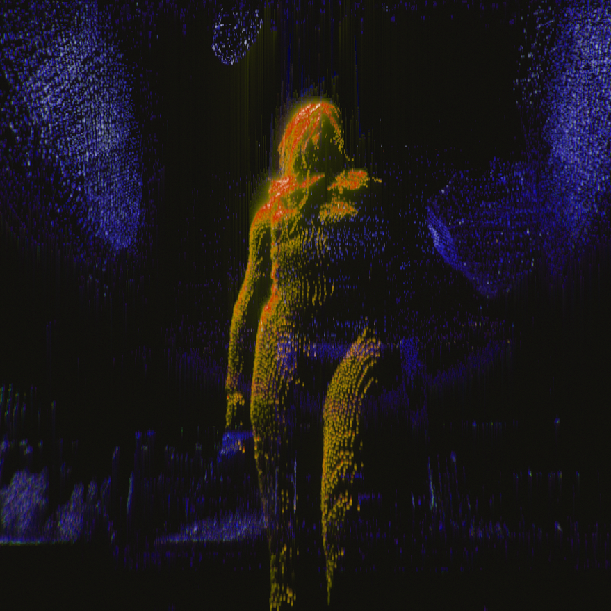
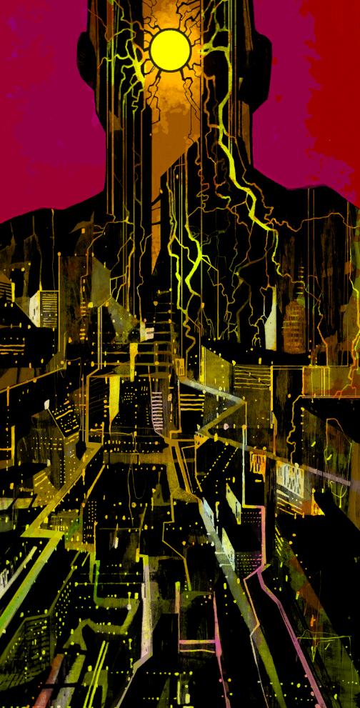
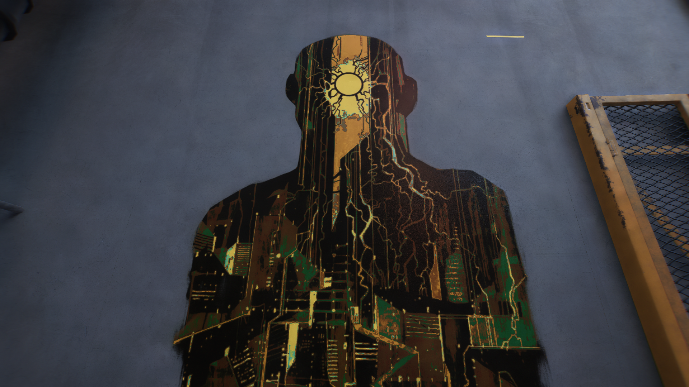
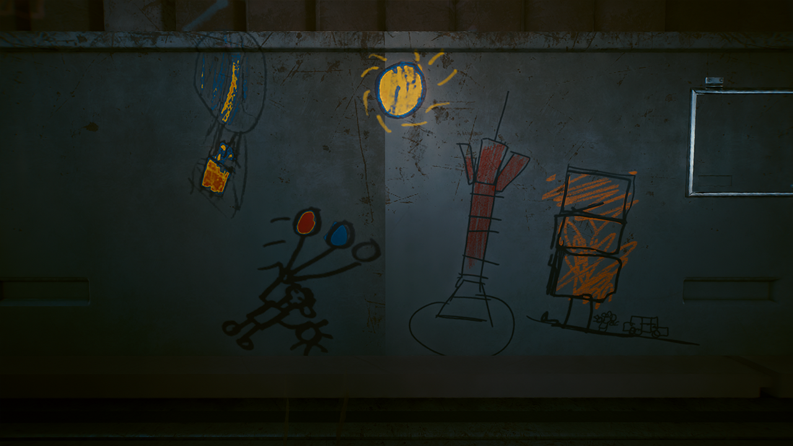
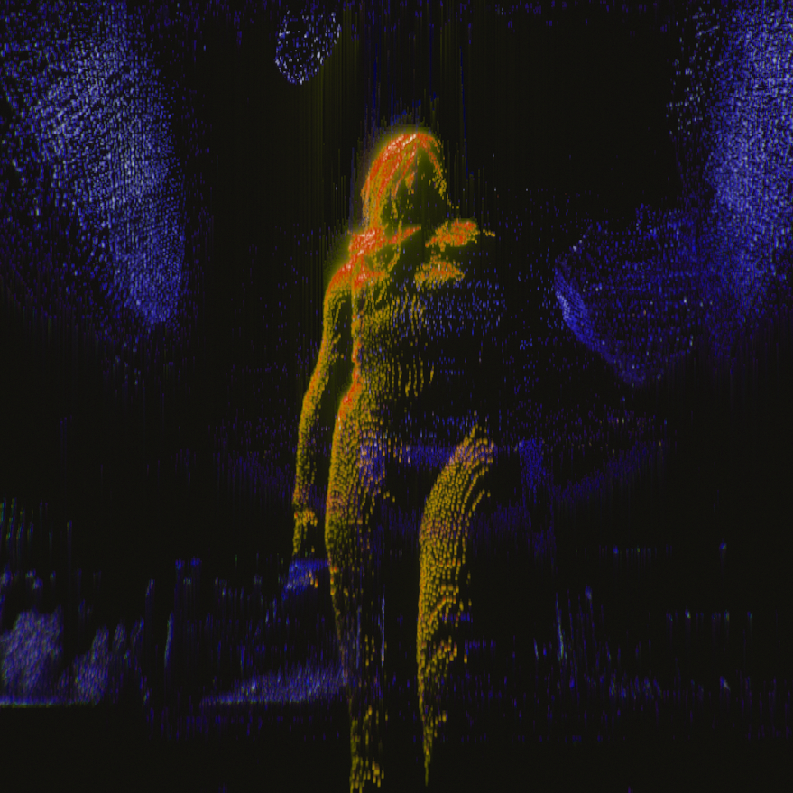
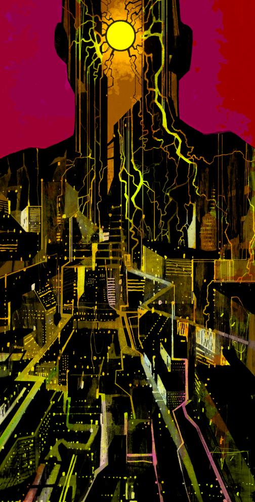
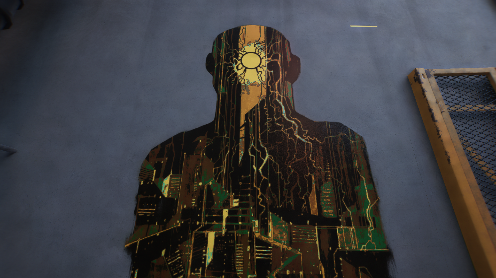
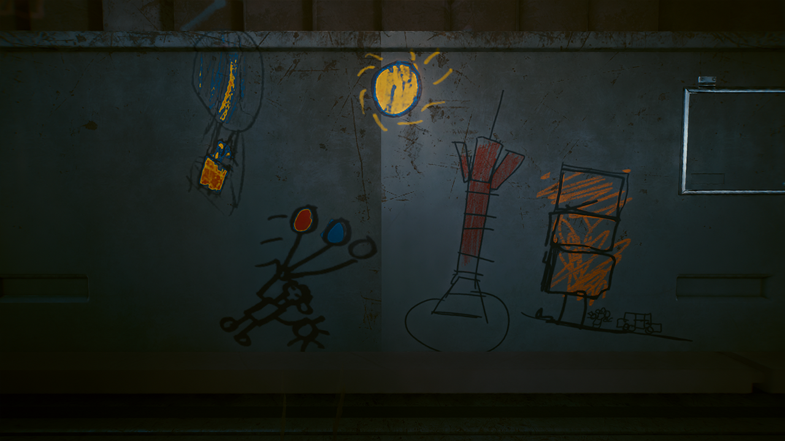
{kind=link}
{kind=link}
{kind=link}
{kind=link}
Swapped Colors
@todo snake conversation
Speculation
I think that this moment of incompatibility - an 8th color - is the backdoor into the blackwall. With both Songbird losing her memories and always at risk of being overwritten, and V finding themselves the incompatible bit and degrading into magenta glitches during DFTR, there is a strong indication that magenta is specifically the 8th color.
V cannot see magenta on their own. The color wheel is missing the necessary ingredients from both the RGB range (Red + Missing Blue) and the CMYK range (Missing magenta outright).
If we were to hazard a solution where V and Johnny can both ride off into the sunset and live happily ever after, then it would require that V lose one or more of their colors in the process. Colors that can specifically be made from the remaining 7 pins.
If we cannot remove magenta (because that is literally the relic keeping V alive), then we still have many colors on the chopping block. Here are the ones that the game has given to us as changeable:
Black & White 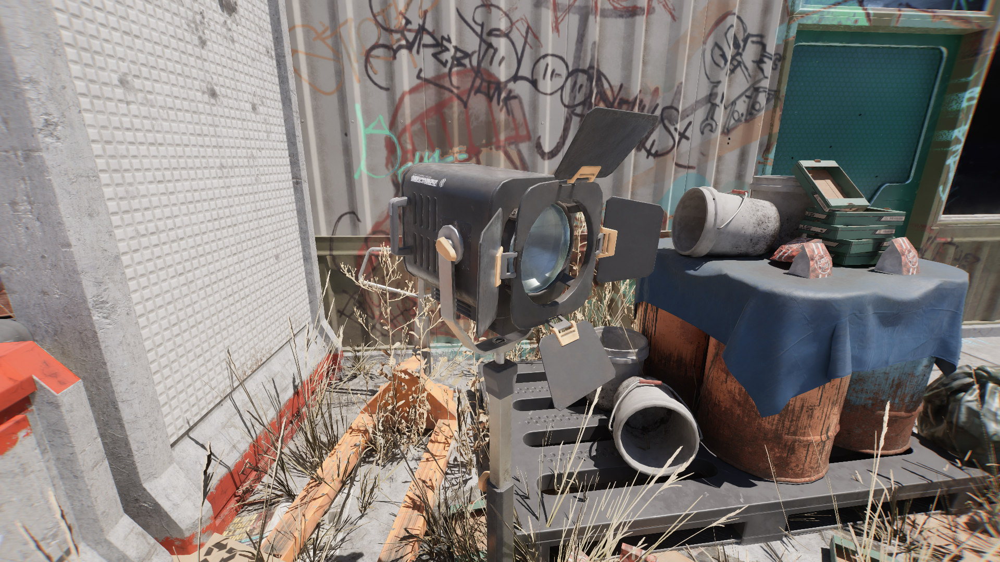 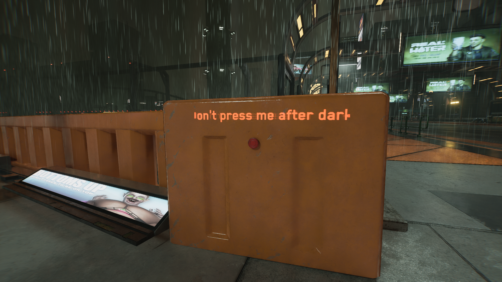 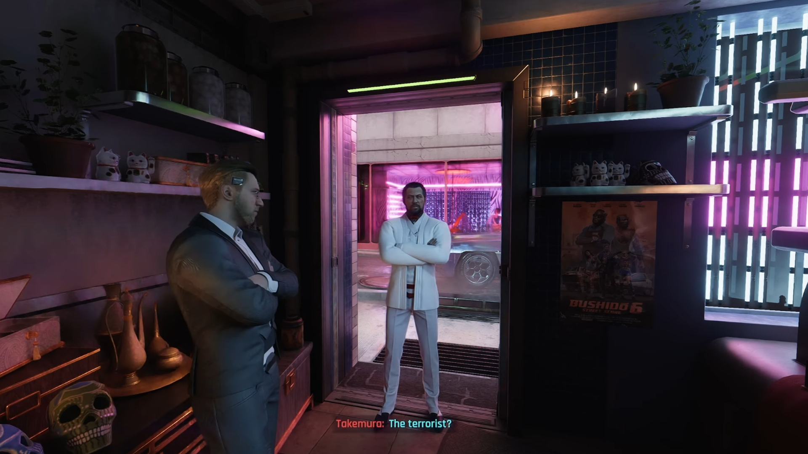 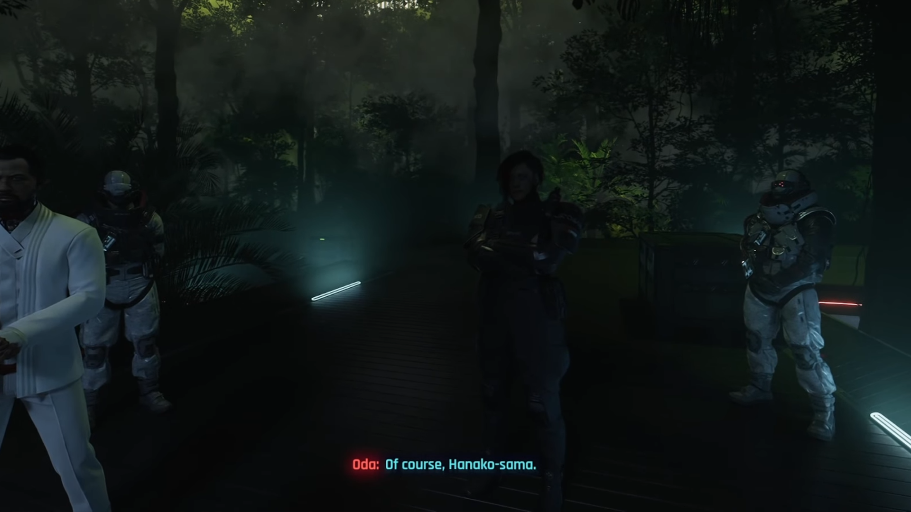 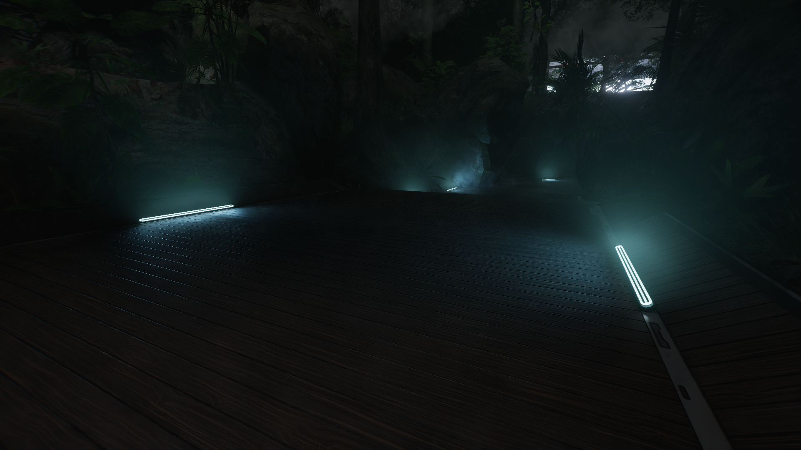 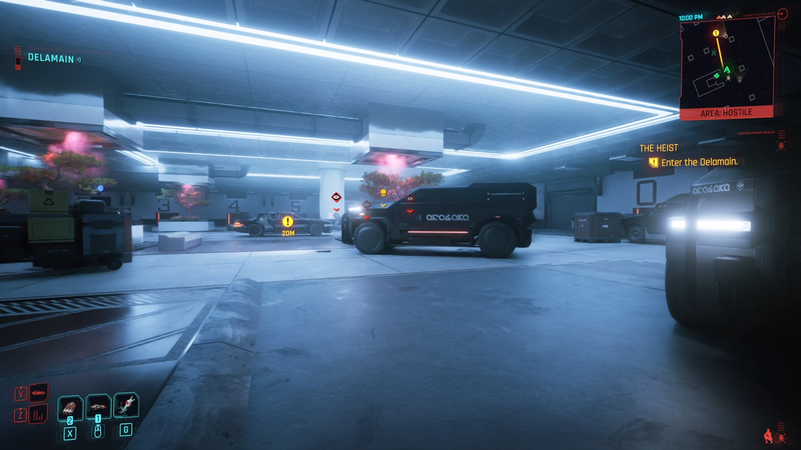
{kind=link}
{kind=link}
{kind=link}
{kind=link}
{kind=link}
{kind=link}
{kind=link}
{kind=link}
{kind=link}
{kind=link}
{kind=link}
{kind=link}
{kind=link}
{kind=link}
{kind=link}
Cyan 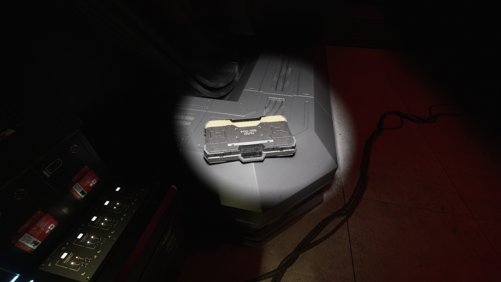
{kind=link}
{kind=link}
{kind=link}
{kind=link}
{kind=link}
Is there a hidden mechanic here, or just a nod? Who knows. But it's a powerful use of color either way.
Up Next
We will explore the VDB symbolism and how it relates to the overlapping of Johnny and V's color spaces to open a window into the blackwall. We'll throw in some reversed-pyramid symbolism for good measure.